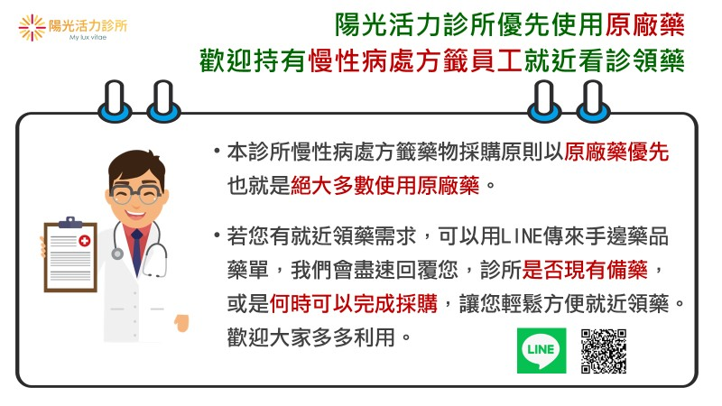

月號－健康大小事
月號－健康大小事|
在台灣，痛風的盛行率高達6.24%，而男性痛風的發生率，比女性高出6倍以上。此外，隨著年齡的增長，罹患痛風的風險也隨之增加。 尿酸超標除了會引發痛風性關節炎外，還會對身體各個器官造成危害，即高尿酸血症會引起全身性發炎反應，在不知不覺中導致器官病變，進而出現多種併發症，例如高血壓、糖尿病、腎臟病、心血管疾病皆是常見的共病。 許多人認為痛風和飲食有關，但痛風不僅與飲食有關。事實上，人體中80%的尿酸來自於胺基酸(蛋白質的組成成分)和核酸(與基因遺傳有關)代謝，約有20%來自於含嘌呤的食物。因此，即使完全不攝取含嘌呤的食物，仍會產生尿酸！ 痛風的症狀不僅限於紅、腫、熱、痛等發炎反應。臨床醫師不僅關注發作時的疼痛問題，還需要仔細評估患者所處的不同病況時期，同時思考藥物治療和生活方式改變的方向。 痛風症狀的發作可分為急性痛風發作、痛風不發作期和痛風石關節炎三個時期。每個時期的病情都有所不同，簡要整理如下： |
 |
所以平常忽略急性痛風及高尿酸血症如果數年(一般平均 5-6 年)內沒有好好控制，且經歷過好幾次的急性發作，可能會讓尿酸結晶容易積累在泌尿道、外耳殼、肌腱、關節囊、皮下組織、骨頭等構造，形成痛風石。痛風石不一定會引發疼痛，但有些痛風石可能會造成骨頭侵蝕及關節構造變形，嚴重時活動能力會受到影響。另外，痛風石可能累積在腎臟中，嚴重時會影響腎臟功能。 痛風的危險因子有哪些？哪些人容易得到痛風？ 痛風發作與尿酸積累和免疫反應有關，因此，血中尿酸的高低與個人的身體狀況、飲食習慣和藥物治療情況有關。常見的痛風危險因子包括以下10點： 對於痛風患者來說，調整日常生活和飲食習慣至關重要。改善飲食習慣可以降低大約15％的血中尿酸濃度。以下是關於痛風的日常飲食和保健的一些建議： 及早治療痛風是很重要的觀念，如果抽血發現尿酸超標時，應該請醫師評估，看看有沒有出現其他共病，並考慮使用藥物控制尿酸。把尿酸控制好，不只能減少痛風性關節炎發作的機會，還能預防未來產生更嚴重的腎臟病變、心血管疾病、中風等問題。 ●仁寶員工免費健檢報告諮詢門診 陽光活力診所推出「仁寶員工免費健檢報告諮詢門診」免費諮詢時段：週一~週五15:00-17:00（其他時段依照一般門診收費），請攜帶【員工健檢報告】+【健保卡】現場掛號。讓您看懂健檢報告上的數字秘密，並協助您了解各項異常值對於身體的影響及追蹤的輕重緩急，從預防疾病、進階診斷、提早治療，更有效率地促進健康，早期遠離疾病。 ●慢性病處方籤藥物採購以原廠藥優先 本診所慢性病處方籤藥物採購原則以原廠藥優先也就是絕大多數使用原廠藥。若您有就近領藥需求，可以用LINE傳來手邊藥品藥單，我們會盡速回覆您，診所是否現有備藥，或是何時可以完成採購，讓您輕鬆方便就近領藥。歡迎大家多多利用。相關問題請洽官方LINE與小編聊聊。 |
|  |